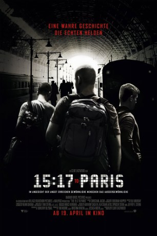
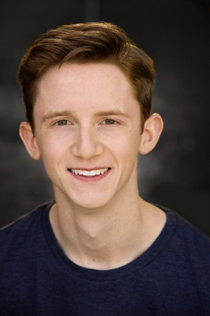

#9045 15:17 to Paris
Alternativ: The 15:17 to Paris
 
 IMDB-Wertung: 5.1 / 10
IMDB-Wertung: 5.1 / 10  Metascore: 45
Metascore: 45 
Die drei jungen Amerikaner Anthony Sadler, Alek Skarlatos und Spencer Stone (die sich jeweils selbst spielen) wollen durch Europa reisen und sitzen deswegen am 21. August 2015 im Thalys-Zug Nr. 9364 von Amsterdam via Brüssel in Richtung Paris – wo sie einen Terroranschlag verhindern und damit zu Helden werden. Durch ihren mutigen Einsatz werden 500 Menschen gerettet, vor der Heldentat liegen drei Leben mit Kindheitsproblemen und langen Wegen bis zu gefestigten Existenzen. Als Anthony, Alek und Spencer – die letzten beiden sind Soldaten – einschreiten, um den Anschlag zu vereiteln, bewährt sich dann das starke Band, das die drei zuvor geknüpft haben: Ohne ihre starke Freundschaft, die selbst unter dem extremen Stress in der Bahn bestand hat, hätten sich die Männer nicht verteidigen können…
Jahr: 2018
Dauer: 93 Minuten
FSK: 12
Land: USA Studio: NOS AudiovisuaisTonspuren: DD5.1 - ,
Untertitel: Deutsch,
Auflösung: 1080p (1920x808) Größe: 4065 MB
Genre: Drama, Biographie
Regisseur:  Clint Eastwood
Clint Eastwood
Drehbuch: Dorothy Blyskal
Soundtrack: Christian Jacob
Darsteller:
- Ray Corasani als Ayoub
- Alek Skarlatos als Alek
- Spencer Stone als Spencer
 Judy Greer als Joyce
Judy Greer als Joyce Jenna Fischer als Heidi
Jenna Fischer als Heidi- Irene White als Elementary Teacher
- William Jennings als Spencer (11-14)
- Bryce Gheisar als Alek (11-14)
- Stephen Matthew Smith als Classmate #1
 P.J. Byrne als Mr. Henry
P.J. Byrne als Mr. Henry- Paul-Mikél Williams als Anthony (11-14)
 Thomas Lennon als Principal Michael Akers
Thomas Lennon als Principal Michael Akers Tony Hale als Coach Murray
Tony Hale als Coach Murray- Grant Weaver als Classmate #2
- Jaleel White als Garrett Walden
 Robert Pralgo als Mr. Skarlatos
Robert Pralgo als Mr. Skarlatos- Matt Thompson als Man on Train
- Cyrille Hertel als Train Manager
- Elena Campbell-Martinez als Professor
- Lillian Solange Beaudoin als Carolyn
- Sinqua Walls als Marine
 Gary Weeks als Recruiter
Gary Weeks als Recruiter Steve Coulter als Jonathan Athnos MD
Steve Coulter als Jonathan Athnos MD- David An als Air Force Liaison Lee
- Adam Rosenberg als Trainee #1
-  Seth Meriwether als Francis
- Matthew Barnes als Sewing Instructor
 Vernon Dobtcheff als Older Man
Vernon Dobtcheff als Older Man- Deborah Grall als Train Passenger
- Heidi Sulzman als Nursing Teacher
- Jamie Renell als Instructor
- Mershad Torabi als Villager
- Alan Heckner als Lt. Col. John
- Cesar Perez als Spencer's Friend
- Louisa Pili als Front Desk Girl
 Jeanne Goursaud als Lea
Jeanne Goursaud als Lea Alix Bénézech als Server
Alix Bénézech als Server- Alisa Allapach als Lisa
- Dillon Adam als Air Force Cadet (uncredited)
- Jordan Barreto als Clubgoer (uncredited)
- Braxton Bjerken als Everett Stone (uncredited)
- Jasmine Bolton als Student (uncredited)
- Gabe Bowles als High School Student (uncredited)
- Brette Bryant als High School Student (uncredited)
- Andrea Antonio Canal als Army Officer (uncredited)
- Steel Canyon als Classmate #3 (uncredited)
 Hélène Cardona als Chief Medic (uncredited)
Hélène Cardona als Chief Medic (uncredited)- Timothy Carr als Army Soldier (uncredited)
- Clemeen Connolly als U.S. Air Force Soldier (uncredited)
- Marisol Correa als U. S. Army Soldier (uncredited)
Datei: X:\2018(A-F)\1517 to Paris (2018, FSK12, 1920x808).mkv seit 08.06.2018
Festplatte: HD 2017(A-Z)-2018(A-F)
 Es gibt insgesamt 151 Filme in der Gruppe '2018(A-F)'
Es gibt insgesamt 151 Filme in der Gruppe '2018(A-F)'